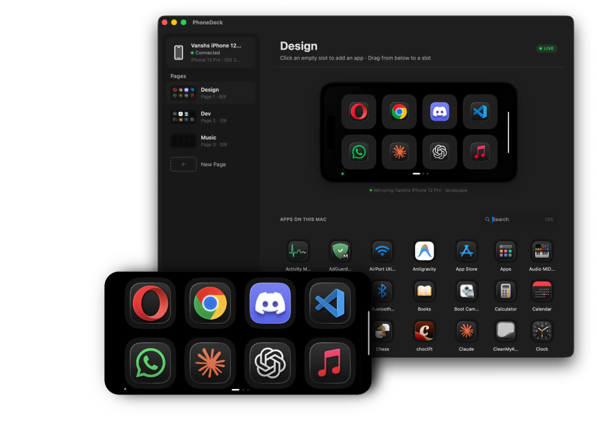
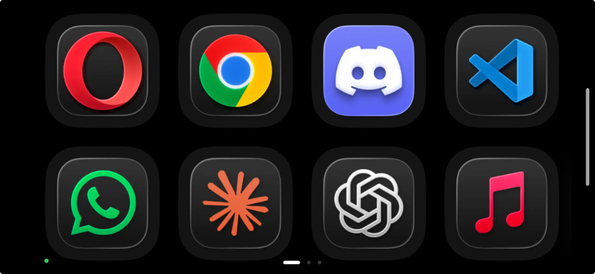
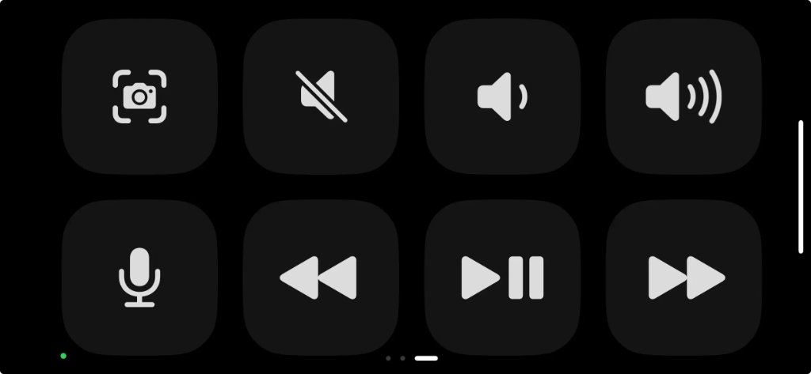

The controller
you already own.
Your Android phone is already a controller. WinDeck just turns it on. One tap. Free, forever.

The StreamDeck
you already own.
The hardware is already in your pocket. Or charging on your desk. You paid for it years ago. Why pay again?
Windows PC Server
Most controllers give you 8 buttons.
WinDeck gives you unlimited pages.
Pages, drag & drop, a full app library, live preview. Everything your workflow needs, in one window beside your screen.
Android Client
Pick up.
Tap.
Done.
Leave your Android phone charging beside your PC. WinDeck finds it automatically, reconnects every time you wake your PC, and stays completely invisible until you need it.
Swipe between pages — Design, Dev, Music. Tap any tile to instantly launch that app on your Windows PC.

How it works
Set up in under a minute.
Get WinDeck
Download the free PC Server and Android APK from GitHub. Install takes 30 seconds.
Connect over Wi-Fi
Same network. WinDeck finds your PC automatically — no complicated IP setups, no pairing hassle.
Control your PC
Launch apps, switch pages, trigger scripts. All from the Android phone already sitting on your desk.
Get WinDeck.
Two apps. One seamless experience. Free, forever.
Both apps must be on v2.3.6 to work.
Update both PC Server and Android App to v2.3.6 before using — one without the other won't connect.

Android
Your controller
Swipe between pages. Tap any tile to launch an app on your PC instantly.
Windows 10/11
Your command center
Manage pages, apps, and system controls. Watch your phone mirror live.